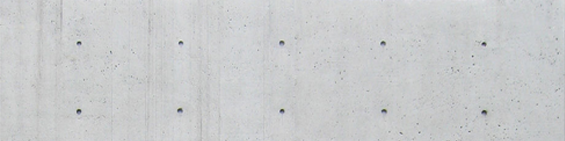
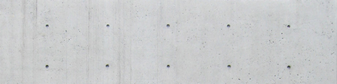

TOP^

 



Modern architecture in Japan is divided into four periods. The first period was the period from 1955 to the 1964 Tokyo Olympic Games, and the society and organization were renewed. It was the time when society was beginning to stabilize, challenging not only architecture but everything.
History


The second period is from 1965 to 1973. After this day's Olympics, it has a reputation as an economic powerhouse, and a new level of architecture has begun. It was the time when the two sides were trying to show off their economic power while having a human life and leisure time, and the clash occurred. The most important social change of this era was the opening of the Shinkansen that matched the Olympics. As a result, the movement and distribution have improved dramatically and it has become possible to enter the world's power. In addition, new housing and urban development projects were carried out to raise the level of residential living.
The third period is from 1974 to 1985 and is called the 'Age of Maturity'. The radical large-scale construction projects that took place during the first and second periods produced a number of problems such as air pollution, factory disposal and deterioration of the urban environment. In 1974, due to the oil crisis, economic slowdown, changes in living conditions, Changes in the industrial structure and production, changes in the service industry and distribution, and changes in the structure of the society itself led to the transformation of the structure and maturity of the structure.
Finally, the fourth period refers to the period after 1986, when there is a personality, and while pursuing globalization, it is time to recognize the tradition and Japan at the same time experiencing prosperity and bubble. It can also be said that the recognition of new possibilities and the reflection of the past age are required at the same time.
"I don't listen to music well.
To be honest, I hear the wind.
I used to listen to modern jazz in the past
but I don't even listen to it in my car these days.
Instead, I can concentrate on the visual."
-Ando Tadao


To understanding Japanese modern architecture, we need to understand the relationship between modern architecture and Japan's traditional culture. When the world began embracing international styles of modernist design in the 20th century, Europe and the United States faced a challenge of abstracting architectural features into their simplest versions. Architects of Japan did not necessarily share this challenge.
Throughout much of Japanese history, the concepts of simplicity, honesty, and purity have guided architecture. What the rest of the world calls modern, Japan can claim as tradition. Of course, creating modernist architecture has presented many challenges in Japan. However, the artful combination of modern tastes with respect to their traditions is what has set these architects apart. Japan itself puts more effort into maintaining and reinterpreting its traditions than nearly any other nation. Rather than simply allowing traditions to stagnate in rehearsed repetition, many Japanese artists have reinvented traditions through new art forms like anime. Architecture in Japan, therefore, is only one part of a larger cultural movement to evaluate the meaning of modern Japanese identity.
With of that being said, we can look at a few characteristics which are really defining modern Japanese architecture. One is the focus on simple forms and an honest treatment of materials. While these are both tenets of international modern architecture, these ideas have held spiritual and philosophical meaning in Japanese Shinto and Buddhist architecture for centuries. One of the masters of this is Tadao Ando, winner of the Pritzker Prize in 1995.
characteristics
“Japanese
architects have
become a new
guard for modern
architecture,
releasing
innovative,
functional, and
aesthetic designs
that are lauded
around the world.”

Tadao style
Strongly influenced by the religions and aesthetics of Japan, Ando's work is defined by its elegant simple forms that combine into rational and complex structures. In fact, his style has been said to share the artistic philosophy of another Japanese art form: haiku. In haiku, deep spiritual, philosophical, and personal meanings can be discovered through the simplest of forms. Ando achieves this through the use of smooth, flat concrete and glass. The materials are unadorned and undecorated, representing the simplest and most honest version of a structure.
Ando's architectural style is said to create a "haiku" effect, emphasizing nothingness and empty space to represent the beauty of simplicity. He favors designing complex spatial circulation while maintaining the appearance of simplicity. As an architect, he believes that architecture can change society, that "to change the dwelling is to change the city and to reform society" Werner Blaser has said, "Good buildings by Tadao Ando create memorable identity and therefore publicity, which in turn attracts the public and promotes market penetration".
The simplicity of his architecture emphasizes the concept of sensation and physical experiences, mainly influenced by Japanese culture. The religious term Zen, focuses on the concept of simplicity and concentrates on inner feeling rather than outward appearance. Zen influences vividly show in Ando’s work and became its distinguishing mark. In order to practice the idea of simplicity, Ando's architecture is mostly constructed with concrete, providing a sense of cleanliness and weightlessness (even though concrete is a heavy material) at the same time. Due to the simplicity of the exterior, construction, and organization of the space are relatively potential in order to represent the aesthetic of sensation.
Besides Japanese religious architecture, Ando has also designed Christian churches, such as the Church of the Light and the Church in Tarumi. Although Japanese and Christian churches display distinct characteristics, Ando treats them in a similar way. He believes there should be no difference in designing religious architecture and houses. As he explains, “We do not need to differentiate one from the other. Dwelling in a house is not only a functional issue, but also a spiritual one. The house is the locus of heart, and the heart is the locus of god. Dwelling in a house is a search for the heart as the locus of god, just as one goes to church to search for god. An important role of the church is to enhance this sense of the spiritual. In a spiritual place, people find peace in their heart, as in their homeland.”


Rokko Housing
Hyogo prefectural museum of art
Himeji City Museum of Literature
Besides speaking of the spirit of architecture, Ando also emphasises the association between nature and architecture. He intends for people to easily experience the spirit and beauty of nature through architecture. He believes architecture is responsible for performing the attitude of the site and makes it visible. This not only represents his theory of the role of architecture in society but also shows why he spends so much time studying architecture from physical experience.Tadao Ando's body of work is known for the creative use of natural light and for structures that follow natural forms of the landscape, rather than disturbing the landscape by making it conform to the constructed space of a building. Ando's buildings are often characterized by complex three-dimensional circulation paths. These paths weave in between interior and exterior spaces formed both inside large-scale geometric shapes and in the spaces between them.

Hyogo prefectural museum of art
"to change the dwelling is to change the city and
to reform society"

Japan has an
ancient
architectural
tradition,
but is also at
the forefront of
modern design
Bye:D
If you want more information, click below!
Tadao Ando Architect & Associates